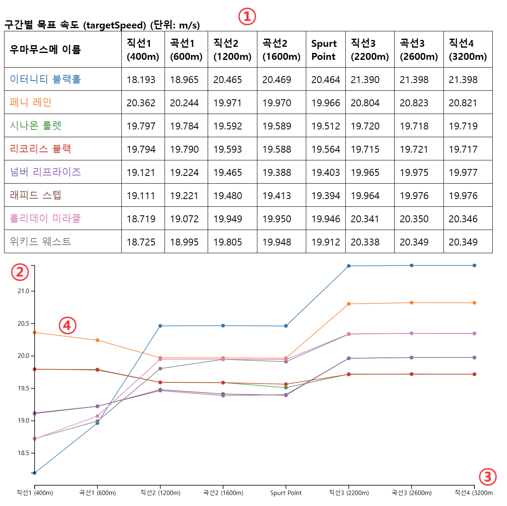

목차
목차의 항목을 클릭하시면 해당 항목으로 바로 이동됩니다.
0. 개요
반갑습니다! 경주 결과 가시화 도구에 오신 것을 환영합니다.
본 웹사이트는 호르트 아카데미의 트레이너 및 우마무스메를 위한 데이터 분석을 지원하기 위해 개발되었습니다.
이 페이지에서 설명하는 사항 외에도 추가로 궁금하거나 필요하신 사항, 혹은 새로운 기능의 제안이 있으시다면, 호르트 아카데미 22기생 후르 알-리야흐를 통하실 경우 가장 빠르게 대응이 가능합니다.
1. 경주 선택 메뉴
홈 페이지에 접속하실 경우, 가장 먼저 두 개의 버튼이 여러분을 맞이합니다.
이 버튼을 클릭하여 원하는 경기를 선택함으로써, 해당 경기에 대한 상세한 정보 조회와 분석이 가능합니다.

- 1. 경주 일자 선택을 클릭한 뒤, 경주가 이루어진 날짜를 선택합니다.
- 2. 이후 경주 종목 선택 란이 활성화됩니다. 이를 클릭합니다.
- 3. 분석을 원하는 경주 종목을 클릭해 선택합니다.
앞으로, 이곳에서 선택한 더트 장거리 - 프테로 컵의 데이터를 사용해 설명을 진행하도록 하겠습니다.
2. 레이스 정보
보고 싶은 경기를 설정하게 되면, 먼저 아래와 같은 레이스 정보가 나타납니다.
이 정보는 주로 레이스가 이루어진 당일에 업데이트됩니다.
우리는 이 단락에서, 레이스 정보를 3개의 구역으로 나누어 살펴볼 것입니다: 메인 그래프, 그래프 다루기, 우마무스메 정보.

2-1. 메인 그래프
얼핏 보면 조금 복잡해 보이기도 하지만, 그래도 찬찬히 뜯어보도록 합시다.
메인 그래프는 크게 세 개의 구역(1, 2~7, 8)으로 구분지을 수 있으며, 아래 그림에서 표기한 것과 같이 여덟 가지의 세부 항목이 있습니다.

- 1. 해당 경기의 날씨 정보입니다. 날씨는 ☀️양호, 💧다습, 🌧️포화, ⚠️불량으로 나뉩니다.
-
2. 그래프에서 실선으로 그려진 부분은 거리의 기준이 되는 우마무스메로부터 해당 우마무스메까지의 거리를 나타냅니다. 정확한 수치는 좌측 y축(5번)을 따릅니다.
거리의 기준이 되는 우마무스메는 자신과의 거리가 언제나 0이므로, x축과 평행한 일직선으로 나타나게 됩니다.
위에 나타난 그래프를 기준으로 설명을 진행하겠습니다. 현재 거리의 기준이 되는 우마무스메는 이터니티 블랙홀인 상태입니다.
주황색 실선은 이터니티 블랙홀과 페니 레인 사이의 거리를 의미합니다.
예를 들어, 약 500턴 부근에서, 주황색 실선이 파란색 실선보다 위에 있으므로, 해당 턴에 페니 레인이 이터니티 블랙홀보다 앞서고 있음을 의미합니다.
또한, 페니 레인은 이터니티 블랙홀보다 약 60미터 정도 앞서고 있는 상황입니다.
-
3. 그래프에서 점선으로 그려진 부분은 각 우마무스메의 해당 턴에서의 속도를 나타냅니다. 정확한 수치는 우측 y축(6번)을 따릅니다
예를 들어, 위 그래프에서 이터니티 블랙홀의 최종 속도는 약 77km/h로 확인됩니다.
-
4. 해당 경기에서 거리의 기준이 되는 우마무스메의 직선, 곡선 구간을 의미합니다. 짙게 칠해진 부분은 곡선 구간, 칠해지지 않은 부분은 직선 구간입니다.
거리의 기준이 되는 우마무스메를 변경할 경우, 직선/곡선 구간도 해당 우마무스메의 기준으로 변경됩니다.
- 5. 좌측에 위치한 y축은 거리의 기준이 되는 우마무스메와 다른 우마무스메 사이의 거리를 의미합니다. 단위는 m입니다.
- 6. 우측에 위치한 y축은 각 우마무스메의 속도를 의미합니다. 단위는 km/h입니다.
-
7. 하단에 위치한 x축은 턴(turn)을 의미합니다. 20턴이 1초에 해당합니다. 거리를 의미하는 것이 아님에 유의해주세요.
(v1.12.0 추가) 우마무스메가 흥분한 구간이 이곳에 표기됩니다. 이 기능은 '0106 시니어 추가경기 (GII)'부터 반영됩니다.
-
8. 그래프와 함께, 현재 그래프 위에서 커서를 가져다 대고 있는 턴에 대한 상세한 정보가 표로 제공됩니다.
우마무스메 이름의 색은 그래프에 나타난 선의 색과 동일합니다.
표의 첫 번째 행에서 Name은 우마무스메의 이름, Speed는 해당 턴에서의 우마무스메의 속도, 그리고 Position은 해당 턴에서의 우마무스메의 위치를 나타냅니다.
2-2. 그래프 다루기
앞서 살펴본 그래프에는 너무 많은 정보가 들어가 있어, 한눈에 들어오지 않음은 부정할 수 없습니다.
따라서, 이번 단락에서 설명될 내용을 통해 원하는 내용만 선택하여 살펴보는 것이 필요합니다.
-
1. 그래프에 표시할 데이터의 종류입니다.
- 전체 선택은 모든 우마무스메의 정보를 표시하고자 할 때 선택 가능합니다. 기본적으로 활성화되어 있습니다.
- 전체 해제는 어떤 우마무스메의 정보도 표시하지 않고자 할 때 선택 가능합니다. 그래프의 모든 실선과 점선이 사라집니다.
-
거리차는 우마무스메간의 거리 차이, 즉 실선을 표시할지의 여부를 결정합니다. 기본적으로 활성화되어 있습니다. 클릭하여 해제할 경우
가운뎃줄이 그어집니다. 재클릭하여 재활성화할 수 있습니다. -
속도는 우마무스메의 속도, 즉 점선을 표시할지의 여부를 결정합니다. 기본적으로 활성화되어 있습니다. 클릭하여 해제할 경우
가운뎃줄이 그어집니다. 재클릭하여 재활성화할 수 있습니다. -
직/곡 표시는 직선/곡선 구간, 즉 회색 음영 처리를 표시할지의 여부를 결정합니다. 기본적으로 활성화되어 있습니다. 클릭하여 해제할 경우
가운뎃줄이 그어집니다. 재클릭하여 재활성화할 수 있습니다.
-
2. 해당 경기의 직선/곡선 구간에 대한 길이 정보입니다. 단위는 m이며, 직선-곡선이 번갈아가며 나타납니다.
예를 들어, 위 그림처럼 400-200-600-400-600-400-600이라 작성되어 있다면, 직선 400m, 곡선 200m, 직선 600m, 곡선 400m, 직선 600m, 곡선 400m, 직선 600m 순으로 이어짐을 의미합니다.
-
3. 그래프에 표시할 우마무스메를 선택 가능합니다. 클릭하여 해제할 경우 해당 우마무스메 이름이 표시된 칸이 회색으로 음영 처리가 되며, 다시 클릭하여 재활성 가능합니다. 기본적으로 모든 우마무스메가 선택되어 있습니다.
이곳에서 선택한 우마무스메는 레이스 영상의 체력 그래프 및 레이스 분석 단락에서도 이용됩니다.
표시되는 이름의 순서는 다음과 같습니다: 후르 알-리야흐, 마운틴스 섀플리, 블랙 팁 마블, 미티어 더스트, 포츈 투유, 더 라스트 일루전, 박 섬광석화, 유피아 데저트로즈, 치쿠모 코토리, 온 세마치, 굿나잇 스이밍, 이터니티 블랙홀, 페니 레인, 트윈 페르소나, 데네브 네오스, 페트리코어 선샤워. (22기 적성표에서 모노크롬 파이썬을 맨 앞으로 옮긴 순서입니다)
표시되는 색상의 순서는 파란색, 주황색, 초록색, 붉은색, 보라색, 갈색, 짙은 분홍색, 회색, 금색, 짙은 하늘색, 연한 하늘색, 연보라색, 옅은 금색, 크림색, 검은색 순입니다.
(v1.12.0 추가) 늦게 출발한 우마무스메에게는 이름 우측에 ❗ 표시가 붙습니다. 이 기능은 '0106 시니어 추가경기 (GII)'부터 반영됩니다.
- 4. 거리차(그래프의 실선)의 계산 기준이 되는 우마무스메를 선택 가능합니다. 기본적으로 가장 위에 나타난 우마무스메가 선택되어 있습니다.
2-3. 우마무스메 정보
이곳에서는 해당 경기에 출전한 호르트 아카데미 22기 소속 우마무스메들의 능력치 정보를 나타냅니다.
이전까지는 프테로 컵의 데이터로 설명되었으나, 이곳에서는 라즈베릴 마일 컵의 데이터로 진행하겠습니다.
-
1. 해당 경기에 출전한 호르트 아카데미 22기 소속 우마무스메들의 이름입니다. 나열 순서와 색상은 앞서 언급된 표시할 우마무스메와 동일합니다.
(v1.12.0 추가) 늦게 출발한 우마무스메에게는 이름 우측에 ❗ 표시가 붙습니다. 이 기능은 '0106 시니어 추가경기 (GII)'부터 반영됩니다.
-
2. 해당 우마무스메의 능력치 정보입니다. 레이스 일자에 행정실에서 확인된 정보를 기반으로 기록되었습니다.
또한, 각 열마다 우마무스메들의 능력치에 따라 칸이 색칠되어 있습니다. 색칠되는 비율은 능력치의 종류별로 가장 높은 우마무스메의 수치를 기준으로 합니다.
예시로 속도의 경우, 가장 능력치가 높은 박 섬광석화는 칸 전체가 칠해져 있으며, 블랙 팁 마블은 573 / 772 * 100 = 74.2 (%) 칠해져 있습니다.
- 3. 해당 우마무스메의 해당 경기 출전 각질 정보입니다. 레이스 일자에 행정실에서 확인된 정보를 기반으로 기록되었습니다. 각질에 따라 배경색이 지정되어 있습니다.
- 4. 해당 우마무스메의 적성 정보입니다. 레이스 일자에 행정실에서 확인된 정보를 기반으로 기록되었습니다.
3. 레이스 영상
레이스 정보 하단에는 아래와 같이 레이스 영상이 표시됩니다.
이 정보는 주로 레이스가 끝난 뒤, 행정실에서 csv 파일이 제공된 이후에 업데이트됩니다.
우리는 이 단락에서, 레이스 영상을 3개의 구역으로 나누어 살펴볼 것입니다: 메인 카메라, 체력 그래프, 레이스 코스.
3-1. 레이스 영상
메인 카메라는 경주가 이루어지는 동안 모든 우마무스메를 트래킹합니다.
기본적으로 좌에서 우로 이동하는 형태로 촬영되었습니다.
- 1. 현재 턴에서 우마무스메들의 PosY 값의 최솟값과 최댓값을 나타냅니다. 0턴에는 레인 넘버에 따라 1미터 간격으로 서 있다가, 경기가 진행되며 전체적으로 코스 안쪽으로 이동합니다.
- 2. 현재 턴에서 우마무스메들의 PosX 값의 최솟값과 최댓값을 나타냅니다. 우측 하단에 있는 것이 최댓값이며, 좌측 하단의 Turn 위에 표시된 것이 최솟값입니다.
-
3. 해당 경기에서 거리의 기준이 되는 우마무스메의 직선, 곡선 구간을 의미합니다. 짙게 칠해진 부분은 곡선 구간, 칠해지지 않은 부분은 직선 구간입니다.
예를 들어, 현재 이미지에서는 1번 우마무스메는 곡선 구간에 진입한 상태이며, 2번 이하의 우마무스메들은 아직 직선 구간을 달리고 있습니다.
- 4. 현재 턴 정보입니다.
- 5. 턴을 선택할 수 있는 바입니다. 드래그하여 이동 가능합니다.
-
6. 레이스 영상을 재생할 수 있습니다.
- Start 버튼으로 영상을 재생할 수 있습니다.
- Stop 버튼으로 영상을 일시정지할 수 있습니다.
- Move to Turn 0 버튼으로 0턴으로 돌아갈 수 있습니다.
- 7. 영상의 재생 속도를 설정할 수 있습니다. 기본 설정은 초당 20턴입니다. 큰 숫자를 입력할수록 영상 재생 속도가 빨라집니다. 최솟값은 1이고, 최댓값은 250입니다. (브라우저 환경에 따라 최대치가 100인 경우도 있습니다.)
-
8. 각 우마무스메는 동그라미로 표시됩니다. 원의 색은 표시할 우마무스메에서 나타난 색상과 동일합니다. 원의 숫자는 해당 우마무스메의 레인 넘버를 의미합니다.
해당 턴에서의 positionKeep이 Overtaking이면 초록색으로, paceUp이면 붉은색으로, SpeedUp이면 파란색 원으로 감싸져 있습니다.
-
9. 각 우마무스메를 나타내는 원의 하단에는 현재의 체력 잔량을 나타나는 바가 그려져 있습니다. 예를 들어, 현재는 9번이 표시된 우마무스메의 경우 대략 절반 정도 체력을 소모한 것을 확인 가능합니다.
또한, 해당 우마무스메가 흥분 상태일 경우 해당 바의 배경에 분홍색 사각형이 칠해집니다.
- 10. 우마무스메를 나타내는 원에 커서를 가져다 대면 이와 같은 형식의 툴팁을 확인할 수 있습니다. 해당 툴팁에는 PosX, PosY, Stamina, positionKeep 정보가 나타나 있습니다.
3-2. 체력 그래프
체력 그래프는 각 우마무스메의 전체적인 체력 변화를 나타낼뿐만 아니라, 메인 카메라와 연동되어 실시간 체력 현황표도 제공합니다.
- 1. 좌측에 위치한 y축은 체력 잔량을 나타냅니다. 단위는 퍼센트(%)입니다.
- 2. 하단에 위치한 x축은 턴(turn)을 의미합니다. 20턴이 1초에 해당합니다. 거리를 의미하는 것이 아님에 유의해주세요.
- 3. 실선은 각 우마무스메의 체력을 나타내는 그래프입니다. 선의 색은 표시할 우마무스메에서 나타난 색상과 동일합니다.
-
4. 해당 경기에서 거리의 기준이 되는 우마무스메의 직선, 곡선 구간을 의미합니다. 짙게 칠해진 부분은 곡선 구간, 칠해지지 않은 부분은 직선 구간입니다.
거리의 기준이 되는 우마무스메를 변경할 경우, 직선/곡선 구간도 해당 우마무스메의 기준으로 변경됩니다.
- 5. x축에 수직인 붉은 선은 현재 메인 카메라에서 보이고 있는 턴을 의미합니다.
-
6. 우측의 표는 현재 메인 카메라에서 보이고 있는 턴의 체력 정보를 나타냅니다.
표의 첫 번째 행에서 Name은 우마무스메의 이름, Stamina는 해당 턴에서의 우마무스메의 체력 잔량 (단위: %), 그리고 Diff은 직전의 턴 대비 체력의 감소량 (단위: %p)을 의미합니다.
우마무스메의 이름 나열 순서는 레인 넘버를 따릅니다.
또한, 해당 우마무스메가 흥분 상태일 경우 이름 칸이 분홍색으로 칠해집니다.
3-3. 레이스 코스
일부 경기에 대해서는 메인 카메라와 연동되는 레이스 코스 영상도 함께 제공됩니다.
다만, 촬영용 헬기들의 대여 등과 관련된 재정적/시간적/법률적 문제로 인해 향후 제공 가능성은 다소 낮습니다.
- 1. 레이스 시작 지점입니다. 게이트가 위치해 있습니다.
- 2. 레이스 종료 지점입니다. 골 라인이 위치해 있습니다.
- 3. 각 구간의 길이입니다. 단위는 미터(m)입니다.
-
4. 현재 우마무스메들이 위치한 구간입니다. 선두부터 후미까지의 위치가 음영으로 표시되어 있습니다.
이 그림의 경우, 선두는 곡선 구간에 갓 진입한 상태입니다.
4. 레이스 분석
레이스 영상 이후에는 데이터 분석을 위한 정보들이 추가로 제공됩니다.
기본적인 자료들에 간단한 가공을 거친 뒤의 분석 자료입니다.
시간이 지남에 따라 새로운 자료가 추가될 가능성이 있습니다.
4-1. 구간별 목표 속도
레이스의 각 구간별 목표 속도를 나타내는 표와 그래프입니다.
표시되는 우마무스메의 종류와 나열 순서, 색상은 앞서 설정된 표시할 우마무스메와 동일합니다.
-
1. 구간별 목표 속도의 평균값을 나타내고 있는 표입니다. 구간은 기본적으로 직선 구간과 곡선 구간으로 구성됩니다.
단, 후반 구간, 즉 라스트 스퍼트가 시작되는 지점은 Spurt Point로 별도로 구분되어 있습니다.
예를 들어, 이미지의 그래프에서 각 열이 의미하는 바는 다음과 같습니다.
- 직선1: 시작 지점부터 400m 지점까지의 평균 targetSpeed
- 곡선1: 400m 지점부터 600m 지점까지의 평균 targetSpeed
- 직선2: 600m 지점부터 1200m 지점까지의 평균 targetSpeed
- 곡선2: 1200m 지점부터 1600m 지점까지의 평균 targetSpeed
- Spurt Point: 1600m 지점부터 라스트 스퍼트 가속 시작 지점까지의 평균 targetSpeed
- 직선3: 라스트 스퍼트 가속 시작 지점부터 2200m 지점까지의 평균 targetSpeed
- 곡선3: 2200m 지점부터 2600m 지점까지의 평균 targetSpeed
- 직선4: 2600m 지점부터 3200m 지점까지의 평균 targetSpeed
- 2. 아래의 그래프는 위의 표를 가시화한 것입니다. 좌측의 y축은 목표 속도를 나타냅니다. 단위는 m/s입니다.
- 3. 하단의 x축은 각 구간을 의미합니다. 거리에 따른 폭의 길이는 반영되어 있지 않습니다.
- 4. 구간별 목표 속도를 나타낸 꺾은선 그래프입니다.